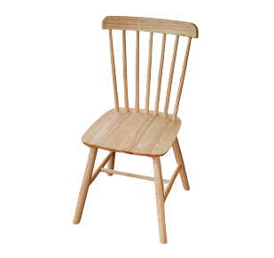
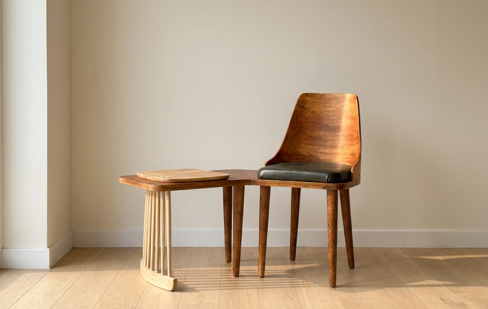
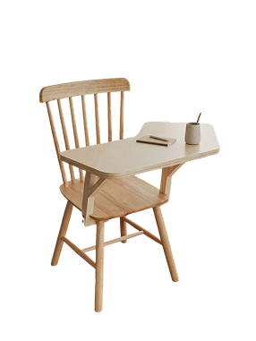
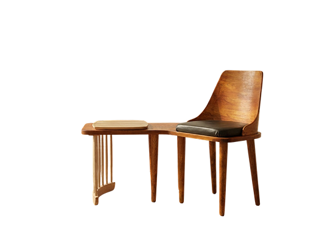
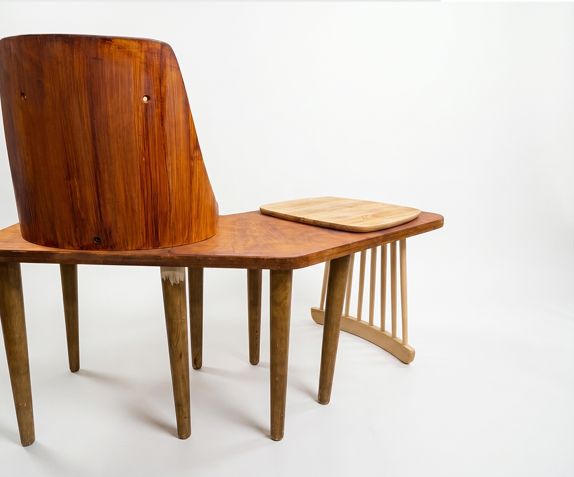
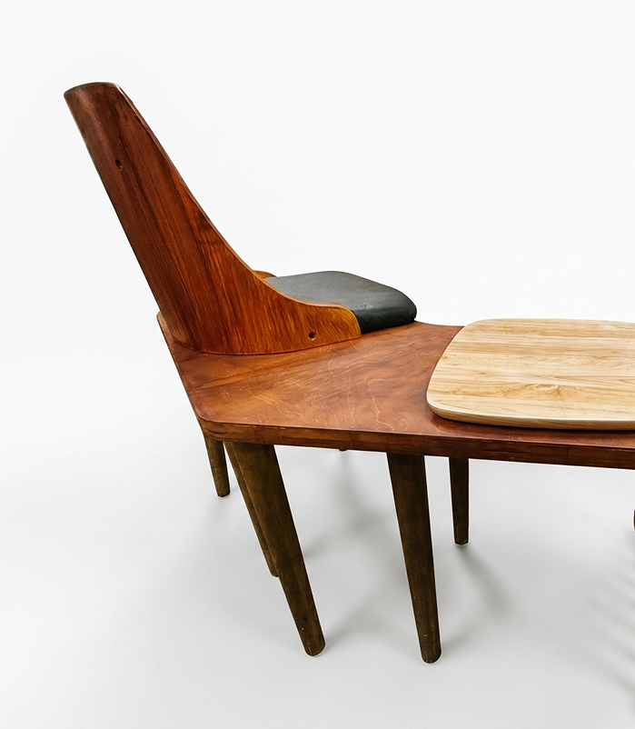
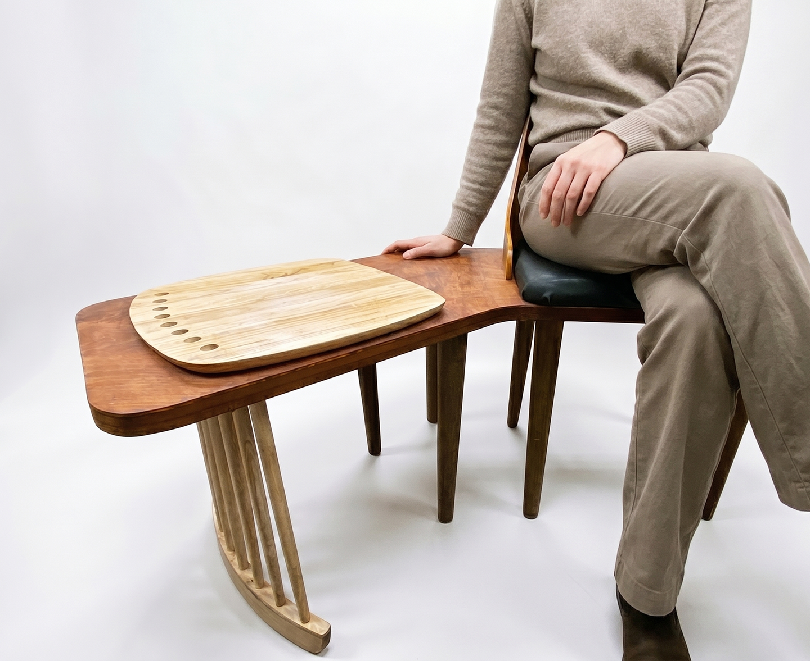

Chair
Graft 001
사용자의 반려의자는 오랜시간 자리를 지켰습니다. 오랜시간의 가구 그 헤리티지를 유지하고 들이기 위한 대안모델, 참여의자이며 수리를 지속하고 싶다는 사용자 지향 그 문맥이 형태를 완성하였습니다.
§ 03 — ArchiveGraft 001—004
누군가의 일상 속에서 축적된 시간의 기록이자, 유일한 서사 그 자체.

파티나가 제시하는 가구는 단순한 '수리이력판 물건'이 아닙니다. 그것은 누군가의 일상 속에서 축적된 시간의 기록이자, 유일한 서사 그 자체입니다. 이 개별 프로젝트는 결함에 얽매이지 않고 질감과 흔적을 정체성으로 재정의하며, 창의적인 공간과 미술품이라는 새로운 기능적 의의와 함께 각 유저와의 상호작용으로 재해석된 지속 가능한 디자인 연구 작품으로 파티나의 영역을 넓히고 있습니다.

사용자의 반려의자는 오랜시간 자리를 지켰습니다. 오랜시간의 가구 그 헤리티지를 유지하고 들이기 위한 대안모델, 참여의자이며 수리를 지속하고 싶다는 사용자 지향 그 문맥이 형태를 완성하였습니다.

이번 과제는 Graft 001의 연장선으로써 책상과 클라이언트의 동선의 니즈가 되어 주었습니다. 부드러운 형태 스틸을 활용하여 사용자가 작업에 집중할 수 있도록 미니멀하고 실용적으로 디자인한 가구입니다.
사물의 흔적을 미려한 접합에서 실용적인 가치를 연장선 방향을 과제로 삼았습니다. 시간 형상에나 이음새에서 사용자들의 신뢰를 보강하는 방식으로 가장 살려주었으며, 데님 섬유의 질간 내구성을 배경으로 수선과 마감이 반복될 수 있는 구조를 갖추었습니다.

사용자의 헤리티지를 고스란히 담아 완전히 새로운 형태의 Potina를 제작했습니다. 의자 등받이를 떼어 롤 코드를 들이고, 이례코드 대용 이지가 조합되지 않게끔 만들어 전체 단면 형태에 가치를 연출하였습니다.



A living record of the object's evolving life.
| Date | Product | Username | Status |
|---|---|---|---|
| 2025/11/25 | Graft 001 | RAGKE | Returned |
| 2025/12/30 | Graft 002 | DEADOUD | Returned |
| 2026/05/13 | Graft 003 | KIMDILDI00 | Returned |
| 2026/05/23 | Graft 004 | GEUNHOHO | Available |